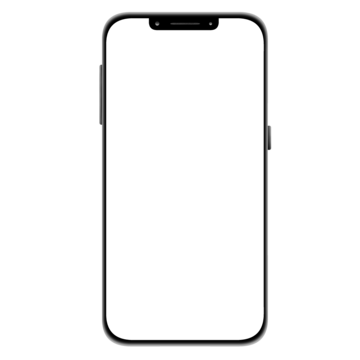

Sobre
A plataforma digital foi pensada e criada para aproximar pessoas e profissionais da aréa juridica de forma simples, rápida e segura.
Nosso objetivo é facilitar o acesso à orientação jurídica, permitindo que usuários enviem suas dúvidas e recebam direcionamento de advogados qualificados, tudo em um ambiente online e acessível.
Por meio de mecanismos inteligentes de triagem, as solicitações são filtradas e direcionadas de acordo com o perfil profissional, otimizando o tempo e aumentando a eficiência no contato com potenciais clientes.
Para os advogados, a plataforma funciona como um escritório virtual, oferecendo um espaço para atendimento, gestão de contatos e ampliação da presença digital. Tornamos o acesso à informação jurídica mais ágil, conectando quem precisa de ajuda a quem pode oferecer a melhor orientação.Excelência no Atendimento
Suporte 24h Disponível
Advogados Verificados
Inteligência de Ponta a Ponta
A JusConnect oferece um conjunto de funcionalidades pensadas para tornar o acesso à orientação jurídica mais simples, organizado e eficiente.
Destaques
-
Agilidade no Envio: Dúvidas jurídicas enviadas de forma prática e clara.
-
Triagem Fina: Sistema que direciona solicitações por perfil profissional.
-
Escritório Digital: Gestão de demandas e interações em um só lugar.
-
Conexão Direta: Comunicação ágil entre usuários e advogados.
-
Disponibilidade 24h: Sua plataforma ativa para conexões a qualquer hora.
-
Segurança Total: Foco absoluto na proteção de dados e confiabilidade.

Profissionais Qualificados
Recursos avançados de Inteligência Artificial para otimizar o atendimento jurídico e a gestão de demandas. Assim, permitindo que advogados expandam sua presença digital, fortaleçam seu posicionamento e aumentem suas oportunidades de atuação de forma prática e organizada dentro das leis redigidas pela OAB.
Demandas jurídicas
Centralização de solicitações jurídicas com direcionamento inteligente.
Triagem inteligente
Classificação inteligente das solicitações conforme perfil profissional.
Ambiente Seguro
Criptografia de ponta a ponta e processamento isolado para máxima conformidade jurídica.
Comunicação direta
Canal estruturado para interação rápida e eficiente entre as partes.
Mais eficiência
Redução de tempo operacional através de automação e organização inteligente.
Bots Personalizados
Automação adaptada ao perfil do advogado para maior eficiência na gestão de demandas.
Dúvidas Frequentes
Esclareça as principais dúvidas sobre o funcionamento da plataforma.
Como funciona a plataforma?
A JusConnect conecta pessoas que buscam orientação jurídica com advogados cadastrados. O usuário envia sua dúvida e pode ser contatado por um profissional.
A plataforma substitui um advogado?
Não. A plataforma facilita o contato inicial, mas o atendimento jurídico é realizado exclusivamente por advogados.
Preciso pagar para enviar uma dúvida?
Não. O envio de informações é gratuito na plataforma, o objetivo é tornar o acesso à orientação jurídica mais simples e acessível.
Como os advogados entram em contato?
Após o envio da dúvida, advogados disponíveis podem analisar a solicitação e iniciar o contato diretamente com o usuário com auxilio dos bots inteligentes.
Meus dados estão seguros?
Sim. A plataforma foi desenvolvida com foco na segurança e proteção das informações.
Sou advogado, como posso participar?
Basta realizar o cadastro na plataforma e acessar o ambiente exclusivo para profissionais.